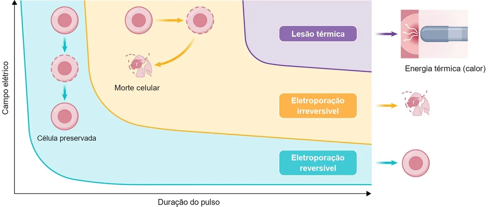
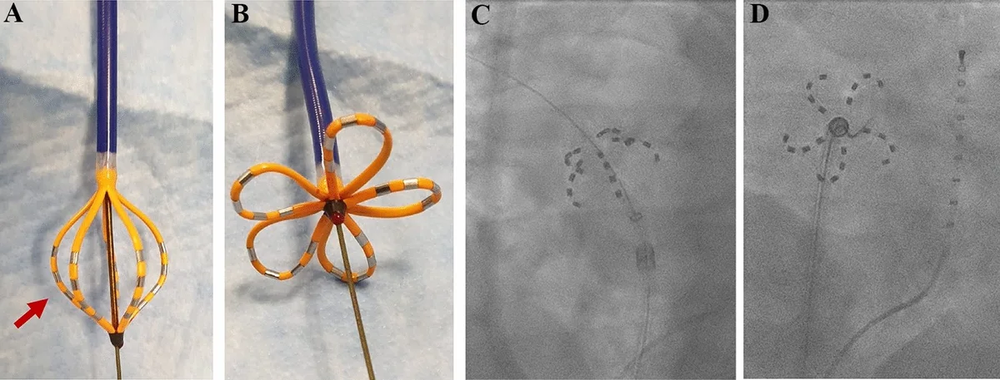
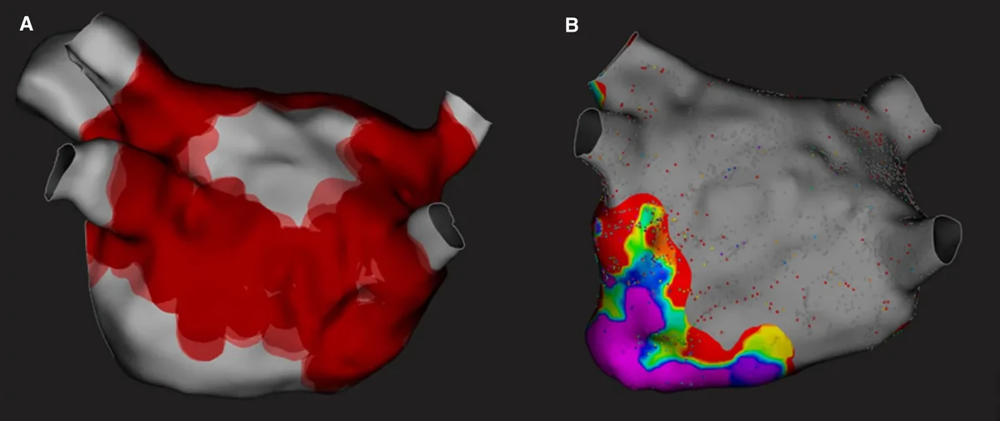

Atualizado em 4 de novembro de 2026
Ablação por campo pulsado (PFA): o que é e o que os estudos mostram
A ablação por campo pulsado, conhecida pela sigla em inglês PFA (pulsed field ablation), é uma forma mais recente de fazer a ablação por cateter. Ela é usada principalmente no tratamento da fibrilação atrial.
O objetivo é o mesmo das técnicas anteriores: isolar eletricamente as veias pulmonares, que são a origem mais frequente dos impulsos que disparam a fibrilação atrial. O que muda é a energia usada para isso.
Como funciona?
Nas técnicas tradicionais, a lesão no tecido do coração é feita com calor (radiofrequência) ou com frio (crioablação). Essas energias funcionam bem, mas o calor e o frio não escolhem o tecido. Eles podem atingir estruturas que ficam muito perto do átrio, como o esôfago, o nervo que controla o diafragma (nervo frênico) e as próprias veias pulmonares.
O campo pulsado usa pulsos elétricos de altíssima voltagem e duração de microssegundos. Esses pulsos abrem poros na membrana das células (um processo chamado eletroporação), e as células do músculo do coração são mais sensíveis a esse efeito do que as de outros tecidos. Na prática, isso permite lesar o tecido do átrio poupando, em grande parte, as estruturas vizinhas.


O que os estudos mostram?
Eficácia comparada às técnicas tradicionais. No estudo ADVENT, 607 pacientes com fibrilação atrial paroxística foram sorteados para campo pulsado ou para ablação térmica (radiofrequência ou crioablação). Em 1 ano, 73,3% dos pacientes do campo pulsado e 71,3% dos da ablação térmica atingiram o objetivo do estudo. Os eventos graves de segurança foram de 2,1% e 1,5%, respectivamente. A conclusão foi que o campo pulsado não é inferior às técnicas térmicas, ou seja, os resultados foram equivalentes [1].
Comparação com a crioablação, com monitor contínuo. No SINGLE SHOT CHAMPION, 210 pacientes com fibrilação atrial paroxística receberam um monitor implantável, que registra qualquer episódio de arritmia com mais de 30 segundos. Entre o 4º mês e o fim do 1º ano, houve recorrência em 37,1% dos pacientes do campo pulsado e em 50,7% dos da crioablação. As complicações foram de 1,0% e 1,9% [2]. É um estudo de um único país e com número moderado de pacientes, então o resultado precisa ser confirmado em outros estudos.
Segurança em larga escala. O MANIFEST-17K reuniu 17.642 pacientes tratados com campo pulsado em 106 centros, fora de estudos controlados [3]:
- não houve nenhum caso de lesão do esôfago nem de estreitamento das veias pulmonares;
- a lesão do nervo frênico foi apenas temporária, em 0,06% dos pacientes;
- complicações graves ocorreram em cerca de 1% dos casos, principalmente sangramento em volta do coração (0,36%) e complicações no local da punção (0,30%);
- AVC ocorreu em 0,12% e óbito em 0,03%.
Fibrilação atrial persistente. Os resultados são menores do que na paroxística, como acontece com qualquer técnica:
- No PULSED AF, com outro modelo de cateter, o procedimento foi eficaz em 1 ano em 66,2% dos pacientes com FA paroxística e em 55,1% dos com FA persistente [4].
- No ADVANTAGE AF, com 339 pacientes com FA persistente, a eficácia em 1 ano foi de 63,5%, e 85,3% ficaram livres de FA com sintomas [5].

Os números variam bastante entre os estudos porque cada um mede o resultado de um jeito. Alguns contam qualquer episódio de 30 segundos registrado por monitor; outros contam só episódios com sintomas. Por isso, um número isolado diz pouco sem saber como ele foi medido.
Quais são os limites e os riscos?
O campo pulsado não é isento de riscos, e alguns efeitos são próprios dele:
- Riscos comuns a toda ablação. Sangramento em volta do coração, complicações no local da punção e AVC continuam possíveis, embora pouco frequentes [3].
- Espasmo de artéria coronária. Os pulsos podem causar uma contração temporária de uma artéria do coração. No MANIFEST-17K, isso ocorreu em 0,14% dos pacientes [3].
- Tempo de acompanhamento. A técnica é recente. Os estudos têm, em geral, de 1 a poucos anos de seguimento, enquanto a radiofrequência e a crioablação têm décadas de dados.
A ablação por campo pulsado é melhor que as outras?
Não existe uma técnica que seja a resposta para todos. Os estudos mostram que o campo pulsado tem eficácia equivalente às técnicas térmicas na fibrilação atrial paroxística [1], com um perfil de segurança favorável em relação às estruturas vizinhas ao coração [3].
Na prática, o campo pulsado ampliou as opções. Em algumas situações, a radiofrequência continua sendo a escolha adequada, por exemplo quando é preciso tratar outras áreas do átrio ou outros tipos de arritmia. A escolha da energia depende do tipo de arritmia, da anatomia e da experiência da equipe, e é discutida na consulta.
Como o campo pulsado se combina com o ICE?
O campo pulsado pode ser feito junto com a ecocardiografia intracardíaca (ICE), o ultrassom de dentro do coração. O ICE mostra a posição do cateter em relação às veias pulmonares e permite acompanhar o procedimento com pouco ou nenhum raio X.
Perguntas frequentes
- O campo pulsado serve para todo paciente com fibrilação atrial?
- Pode ser usado na fibrilação atrial paroxística e na persistente. A indicação da ablação vem antes da escolha da energia: primeiro se decide se a ablação faz sentido, depois qual técnica usar.
- A recuperação é diferente?
- Em geral, a recuperação é semelhante à das outras técnicas de ablação. A alta pode ser no mesmo dia ou depois de uma noite no hospital, e as orientações são individuais.
- Ainda preciso de anticoagulante depois?
- A anticoagulação depois da ablação é individualizada. O tempo de uso e a necessidade de manter o remédio dependem do risco de AVC de cada pessoa, como em qualquer ablação de fibrilação atrial.
- O campo pulsado evita uma segunda ablação?
- Não necessariamente. Como em qualquer técnica, alguns pacientes precisam de um segundo procedimento.
Agendamento
Agende uma avaliação com o Dr. Thiago
Na consulta, ele avalia o seu caso e explica as opções de tratamento. O agendamento é feito com a secretaria, pelo WhatsApp do local que preferir.
Leia também: Ablação de fibrilação atrial · Ecocardiografia intracardíaca (ICE)
Referências
- Reddy VY, Gerstenfeld EP, Natale A, et al. Pulsed field or conventional thermal ablation for paroxysmal atrial fibrillation (ADVENT). N Engl J Med. 2023. doi:10.1056/NEJMoa2307291
- Reichlin T, Kueffer T, Badertscher P, et al. Pulsed field or cryoballoon ablation for paroxysmal atrial fibrillation (SINGLE SHOT CHAMPION). N Engl J Med. 2025. doi:10.1056/NEJMoa2502280
- Ekanem E, Neuzil P, Reichlin T, et al. Safety of pulsed field ablation in more than 17,000 patients with atrial fibrillation in the MANIFEST-17K study. Nat Med. 2024. doi:10.1038/s41591-024-03114-3
- Verma A, Haines DE, Boersma LV, et al. Pulsed field ablation for the treatment of atrial fibrillation: PULSED AF pivotal trial. Circulation. 2023. doi:10.1161/CIRCULATIONAHA.123.063988
- Reddy VY, Gerstenfeld EP, Schmidt B, et al. Pulsed field ablation for persistent atrial fibrillation: 1-year results of ADVANTAGE AF. J Am Coll Cardiol. 2025. doi:10.1016/j.jacc.2025.03.515